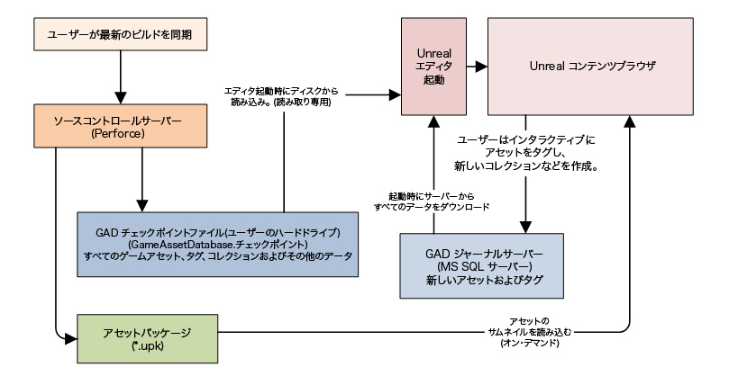
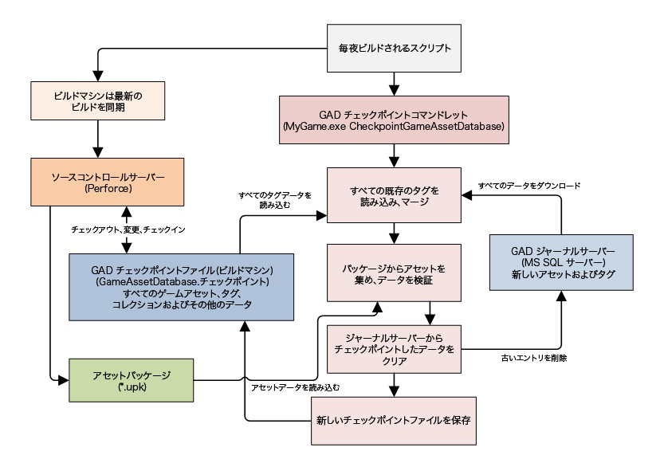

UDN
Search public documentation:
ContentBrowserDatabaseJP
English Translation
中国翻译
한국어
Interested in the Unreal Engine?
Visit the Unreal Technology site.
Looking for jobs and company info?
Check out the Epic games site.
Questions about support via UDN?
Contact the UDN Staff
中国翻译
한국어
Interested in the Unreal Engine?
Visit the Unreal Technology site.
Looking for jobs and company info?
Check out the Epic games site.
Questions about support via UDN?
Contact the UDN Staff
コンテンツ ブラウザ データベース
ドキュメントの概要: コンテンツ ブラウザを強力にする Game Asset Database (ゲーム アセット データベース) をセットアップするためのガイド。 ドキュメントの変更ログ: Mike Fricker により作成、 Richard Nalezynski? により管理。概観
コンテンツ ブラウザ は、アセット、タグ、コレクションを格納するのに、特別なデータベース バックエンドを使用します。 このシステムを Game Asset Database (ゲーム アセット データベース) (短縮すると GAD) と呼びますが、実際はいくつかのデータベース コンポーネント (ジャーナル サーバー 、 チェックポイント ファイル 、 サムネイル格納 、 メモリ内データベース) の混合です。また、データベースをアップデートし、管理するのに使用される checkpoint コマンドレット もあります。 これらはすべて、コンテンツ ブラウザで作業をするユーザーにとっては目に見えない部分ですが、良い機能を追加します。なぜゲーム アセット データベースが必要なのですか？
ゲーム アセット データベースは、確実に複雑性を増加しますが、このシステムには重要な恩恵があります。- すべてのゲーム コンテンツは、読み込まれていなくても、一瞬でブラウズすることができるようになります。
- ユーザーは、アセットをタグしたり、それらをコレクションに追加したりするために、パッケージをチェックアウトする必要が決してありません。
- サムネイルは、読み込まれていないアセットも含むすべてのゲーム アセットに表示されます。
- すべてのタグ データは、適切にソース コントロールされています (例えば、ロールバックが可能ということです)。
コンテンツ ブラウザ データベース インタラクション
エディタが起動すると、まずはすべてのアセット名、タグ、コレクションを読み取り専用の_チェックポイント ファイル_から読み込みます。このファイルは、最後のチェックポイント プロセスが実行されたとき (少なくとも 1 日に 1 回) のゲーム内のすべてのタグの状態を表します。次にエディタは ジャーナル サーバー に接続し、最近適用されたタグのすべてをダウンロードします。 コンテンツ ブラウザは、ゲーム全体のすべてのアセット、パッケージ、グループ、タグ、コレクションを知っています。ユーザーは、すべてのゲーム アセット (読み込まれていようが、そうでなかろうが) を、グラフィカルなインターフェースを使用して、ブラウズすることができます。読み込まれたアセットの_サムネイル_は、動的に生成されますが、読み込まれていないアセットのサムネイルは、 アセット パッケージ ファイルから直接すぐに読み込まれます。 ユーザーがアセットをタグしようと決定すると、コンテンツ ブラウザはその メモリ内データベース を変更とともにアップデートし、その後すぐに ジャーナル サーバー に接続してタグ コマンドをアップロードします。 _チェックポイントファイル は、決してエディタによって変更されるのではなく、すべての変更は ジャーナル サーバー に送られ、 checkpoint コマンドレット によって後ほど解決されることに留意してください。 以下の表は、コンテンツ ブラウザがゲーム アセット データベースとどのようにインタラクトするかを示したものです。
また、「オフライン」モードでエディタを実行することが可能で、これはライブサーバーを使うことなく限定された機能を使えるようにします。更なる情報については、この下部の近くにある「オフラインモード」の章をご覧ください。ビルド システム データベース インタラクション
以下の表は、ビルド マシンで実行しているスクリプトが、どのようにしてアセット データベース データを生成し、管理するかを示したものです。最初は複雑なように見えるかも知れませんが、実際は単純で簡単に管理をすることができます。
データベース セットアップ
以下は、Game Asset Database (ゲーム アセット データベース) をセットアップするのに必要なステップの簡単な概要とチェックポイント プロセスです。- ゲームの新しい Checkpoint (チェックポイント) ファイルを作成するために、コマンドレットを実行します。
- アセット データベースを「チェックポイント」し、ソース コントロール内のファイルをアップデートするために、通常のビルド プロセスをセットアップします (これは毎晩、自動的に実行されます)。
- ジャーナル サーバー をインストールして、設定します。
- 各ゲームのエディタ構成ファイルのデータベース/ブランチ設定を設定します。
- 任意で、自動的にサムネイルを生成させるために、すべてのアセット パッケージを再保存します (必要な場合のみ)。
どうも大変そうなのですが…。
コンテンツ ブラウザは、チェックポイント、またはジャーナル サーバーなしでも機能することが 可能 です。推奨はされませんが、以下がありえる結果です。 チェックポイント ファイルがない場合:- ユーザーは、ゲーム コンテンツのすべてをブラウズすることができません。読み込まれたアセットのみ検索可能でインタラクティブです。
- いくつかのタイプのメタデータは利用可能ではありません (例: アセットが追加された日など)。
- すべてのパッケージとディレクトリが見られるということ以外は、内容は汎用ブラウザと似ています。
- ユーザーは、アセットをタグしたり、タグで検索したりすることができなくなります。
- ユーザーはアセットをコレクションに入れることができません (プライベート コレクションでさえもです)。
- さまざまな「ライブ」機能が利用可能でなくなります。
チェックポイント ファイルの作成
ゲームのそれぞれに最初の チェックポイント ファイル を作成する必要があります。 ゲームは、1 つの GAD チェックポイント ファイルを /MyGame/Content/GameAssetDatabase.checkpoint として格納しています。これは、(すべてのエンジン アセットを含む) ゲーム全体のすべてのアセットのメタデータを格納するバイナリ ファイルです。エディタは、起動時にチェックポイント ファイルをメモリに読み込み、そこでアセットを素早く検索するためにコンテンツ ブラウザによって使用されます。 チェックポイント ファイルの作成は簡単です。- 最新のゲーム コンテンツと同期していることを確認します。
- チェックポイント コマンドレットを実行します:
- MyGame.exe CheckpointGameAssetDatabase
- (すべてのゲーム コンテンツを取得するのに何分間かかかります。)
- 以上で終わりです。これで、このゲームのきちんと動作するチェックポイント ファイルができました。
- エディタをロードすると、 コンテンツ ブラウザ を使用してゲーム内のすべてのアセットをブラウズすることができるようになります。
- 通常、このファイルはソース コントロールにチェックします。これに関しては、次のセクションを参照してください。
通常チェックポイントされるゲーム コンテンツ
この部分をどのように処理するかは、どちらかというと自由性があります。Epic では、以下のようにセットアップをします。- 毎晩午前 3 時に、ビルド システムを実行するマシン (Controller) は、以下を実行するビルド スクリプト (CheckpointGAD.build) を実行します。
- 各ゲームで (または、ゲーム ブランチ):
- 最後に成功した エンジン ビルド (バイナリを含む) に*同期*します。最後の有効なビルドは、しばしば直前に完成したものです。
- すべてのゲーム コンテンツ (そしてゲーム コンテンツ のみ ) をヘッド修正に*同期*します。これは、エンジンの微妙に古いビルドを実行していたとしても、アセット チェックポイントをできる限りアップデートされた状態にするためです。
- ゲームの GAD チェックポイント ファイル (GameAssetDatabase.checkpoint) を*チェックアウト*します。
- チェックポイント ファイルをアップデートするために、 チェックポイント コマンドレット を 実行 します。
- MyGame.exe CheckpointGameAssetDatabase
- コマンドレットの出力は、ビルド システム エンジンにより、エラー テキストのチェックがされます。何かがうまくいかなかった場合は、チェックポイントが失敗し、ファイルは元に戻り、適宜関係者に E メールが送られます。
- アップデートされた GAD チェックポイント ファイル (GameAssetDatabase.checkpoint) を 提出 します。
- 各ゲームで (または、ゲーム ブランチ):
ジャーナル サーバーのセットアップ
これは、SQL サーバーをインストールし、設定することに関わってくるので、デベロッパーが読んでそれに書き込むことができます。 SQL へのコンテンツ ブラウザのデマンドは非常に軽いので、Microsoft SQL Server の無料の 'Express Edition' を使用することをお勧めします。しかしながら、既にフル バージョンの MS SQL を使用しているならば、それで全く問題はありません。サーバーは、新しくタグされたアセットのスクラッチパッドとしてのみ使用され、通常は一度に何千以上もの列を持つことはありません。実際の GAD データのほとんどは、ディスクの 'Checkpoint File' に格納されます。 備考: チームが、アセット タグ、コレクション、アセット メタデータの特定のタイプ (例: Date Added(追加日) など) を必要としない場合は、アセット データベースを更新するのに、好きな時にジャーナル サーバーのセットアップをスキップして、一からチェックポイント ファイルをリビルドすることもできます。これは、作業者次第です。MS SQL Server のインストール
(備考: ジャーナル サーバーをホストするコンピュータに既に MS SQL Server のバージョンがインストールされている場合は、このステップをスキップすることができます。例えば、チームが無制限のバージョンの MS SQL Server を既に購入している場合は、それを代わりに使うのが良いでしょう。) 無料のバージョンである MS SQL Server Express Edition をインストールすることをお勧めします。(Epic では 2008 バージョンを使用しましたが、2005 でも大丈夫なはずです。)- インストーラは、最初にインストールされていなければならない条件に関して警告するかも知れません (例: Windows Installer、Windows Powershell など)。促されたら、まずはこれらをインストールしてください。
- MS SQL Server Express 2008 に関して言えば、デフォルト インストール設定を最後まで使用することができます。アプリケーションの異なるバージョンを使用している場合は、MS SQL Server Management Studio はサーバーとともにインストールされるので、設定を簡単に編集/監査することができます。
- Server Admin (サーバー管理者) 名を要求されたら、自分のユーザー名を使用するか、IT 部門に連絡して何を使用すればよいかチェックしてください。
- データベースの名前は何にしても構いませんが、後ほど Unreal Editor の設定をする際に必要となるので、きちんと書き留めるようにしておいてください。
- ここで使用する例では、デフォルトのデータベース名である以下を使用します: SQLEXPRESS
自動ジャーナル サーバー セットアップ (推奨)
- CreateContentJournal.sql スクリプトを使用して、ジャーナル サーバー インスタンスを作成します。
- スクリプトは UE3 ソース ドロップにあります: /Development/Src/Engine/SQL/CreateContentJournal.sql
- sqlcmd.exe コマンドライン アプリケーションを使用して、このスクリプトを実行します。
- サーバーを実行しているコンピュータの名前をサーバー名 (デフォルト サーバー インスタンスでない限り) とともにパスインする必要があります。
- また、UDN から CreateContentJournal.sql ファイルのファイル名とパスをパスインします。
- 例は以下の通りです: sqlcmd -S Computer_Name\Server_Name -i CreateContentJournal.sql
- すべてうまくいくと、エラー メッセージが表示されることもなく、ジャーナル サーバーの用意ができます。
- 備考: 通常の Windows 認証は、新しいサーバーで、デフォルトで有効化されているはずですが、チーム メンバーのコンピュータがそれと直接通信することができるように、すべてが設定されることを IT 部門に確認する必要があるかも知れません。
- 何らかの理由で、サーバー インスタンスを手動で作成する必要がある場合は、次のセクションのステップに従ってください。
手動ジャーナル サーバー セットアップ (必要な場合のみ)
CreateContentJournal.sql スクリプトがうまく動作しなかったという、あまりあり得ない状況でのみこのステップに従ってください。スクリプトを実行するのに成功したならば、データベースは既に作成されているので、このセクションをスキップすることができます。- MS SQL Server Management Studio を立ち上げて、データベースに接続します。
- 左側の Object Explorer (オブジェクト エクスプローラ) で、"Databases (データベース)" で右クリックをし、"New Database... (新しいデータベース)" をクリックします。"New Database (新しいデータベース)" ダイアログ ウィンドウがポップアップします。
- "Database name (データベース名)" を ContentJournal に設定します。
- "OK" をクリックして、ダイアログを閉じ、新しいデータベースを保存します。
- Object Explorer (オブジェクト エクスプローラ) の "Databases (データベース)" で、(Tables (表)、Views (ビュー) などの) コンポーネントが見えるように "ContentJournal" を展開します。
- Object Explorer (オブジェクト エクスプローラ) の "ContentJournal" にある "Tables (表)" で右クリックをし、"New Table... (新しい表)" をクリックします。アプリケーションのコンテンツ エリアで表デザイナーが開きます。
- 表の以下のコラムを設定します:
- 最初のコラム:
- "Column Name (コラム名)" を DatabaseIndex に設定します。
- "Data Type (データ タイプ)" を int に設定します。
- "Allow Nulls (NULL を許可)" を No (チェックなし) に設定します。
- 最初のコラムのプロパティ:
- "Identity Specification -> (Is Identity)" を Yes に設定します。
- 最初のコラム ("DatabaseIndex") で右クリックをして "Set Primary Key (プライマリ キーを設定)" をクリックします。
- 2 個目のコラム:
- "Column Name (コラム名)" を Text に設定します。
- "Data Type (データ タイプ)" を nvarchar(MAX) に設定します。
- "Allow Nulls (NULL を許可)" を No (チェックなし) に設定します。
- 最初のコラム:
- [Ctrl+S] を押して、新しい表を保存します。保存ダイアログがポップアップします。
- 新しい表を Entries の名前で保存します。
- 表の以下のコラムを設定します:
- 以上です。ジャーナル サーバーは動作するようになりました。
- 備考: 通常の Windows 認証は、新しいサーバーで、デフォルトで有効化されているはずですが、チーム メンバーのコンピュータがそれと直接通信することができるように、すべてが設定されることを IT 部門に確認する必要があるかも知れません。
Unreal Editor の設定
もう少しで終わりです。 ジャーナル サーバーのセットアップ後、UnrealEd にどこを探せば良いかを教える必要があります。また、エディタが実行されているゲームの特定のソース コントロール ブランチの "branch name (ブランチ名)" を設定する必要があります。- テキスト エディタで BaseEditor.ini を開きます (/Engine/Config/BaseEditor.ini)。
- ゲーム特有の設定が必要な場合は、これらの変更を /MyGame/Config/DefaultEditor.ini で行うことができます。
- .ini ファイル内の [GameAssetDatabase] セクションを検索します。まだ存在しない場合は、これを作成してください。
- JournalServer をジャーナル SQL サーバー (Computer_Name\SQL_Server_Name) のパスに設定します。
- 例は以下の通りです: JournalServer=ServerComputer\MYSERVERNAME
- サーバーが、リモート コンピュータ上で デフォルト SQL サーバー インスタンス の場合は、サーバー名を省くことができます。
- 例は以下の通りです: JournalServer=ServerComputer
- BranchName をゲームの_デポ パス_に適切に設定します。
- 例は以下の通りです: BranchName=Main
- ブランチの名前は適切であると思うものにして構いませんが、文字は英数字のみでなければいけません。
- ブランチ名は、すべてのジャーナル入力に付けられるので、短いものにしてください。
- .ini 設定に関してふれているところで、コンテンツ ブラウザにタグやコレクションの作成や削除を許可/非許可にさせるユーザー設定がいくつかあります。以下を設定することにより、アート リーダーや技術アーティストにタグ作成を有効化してもらうと良いでしょう。
- MyGameEditorUserSettings.ini で [ContentBrowserSecurity] のセクションを追加します。
- このセクションで、*bIsUserTagAdmin=True* と bIsUserCollectionsAdmin=true を設定します。
- これは、セキュリティ システムでなく、間違ってデータを破棄してしまうことを防ぐのに役立つだけだということに留意してください。
アセットのサムネイル作成
コンテンツ ブラウザが、現在読み込まれていないアセットのサムネイルを表示する必要がある場合、サムネイルを持っているかどうかを見るためアセットのパッケージをチェックします。その後、素早く読み込み、表示します。これは、アセットのパッケージ、またはそのデータを実際に読み込まずに起こります。 サムネイルは、UnrealEd によってほとんどのアセット タイプのために自動的に生成されます。単に パッケージを 読み込み、 保存する だけで、エディタはサムネイルが、すべてのサポートされたアセット タイプのためにレンダリングされるようにします。 コンテンツ ブラウザで多くのアセットが_サムネイルを持っていない_場合は、それはおそらくパッケージが* UnrealEd で再保存されなければいけない*ことを意味します。まだカスタム サムネイルをサポートしないアセット タイプ (例: Sounds、CameraAnims など) がたくさんあることに注意してください。また、サムネイルをアップデートするには、エディタ内でパッケージを保存する必要があることに注意してください。(ResavePackages のような) コマンドレットは、これにはレンダラが必要となるので、サムネイルを生成することができません。 読み込まれたアセットに関しては、エディタがリアルタイムでサムネイルを生成します (パッケージ ファイルから読み込まれるわけではありません)。 すべてのサムネイルは、パフォーマンスを改善するために短い間メモリ内でキャッシュされますが、ほとんどはメモリ使用量を軽くすませるためにすぐに削除されます。高度なトピック
オフラインモード
SQL 接続が必要のないもので「オフラインモード」にてコンテンツブラウザを実行することは可能ですが、タギングおよびコレクションを使うようにすることができます。 オフラインモードを使用するには、オフラインのジャーナルアラーム
エディタを初めて起動するときに、UTEditorUserSettings.ini にデータフィールド "UserJournalUpdateAlarm" が追加され、7 日後の日付に設定されます。これは、次にアラームが鳴る日付を意味します (注意 - これはアプリケーションを閉じたときに保存されます)。 これをテストするには、以下の手順を実行します。- アラームが確実に鳴るように、この項目の日付が、次の実行時刻よりも前になるように設定します。
- エディタを再起動します。
- 起動と同時に次のダイアログが表示されます。

- "Check Now" (今すぐチェック) は、チェックポイントの更新を実行し、ジャーナルファイルのバックアップを作成し、元のジャーナルファイルを削除してから、アラームを 7 日後の日付に設定します。
- "Next Run" (次回に実行) は何も実行しません (アラームは次回実行時に鳴るように適切に設定されています)。
- "Wait a Day" (1 日待機) と "Wait a Week" (1 週間待機) は、アラーム時刻を現在の時刻からそれぞれ適量進めます。
チェックポイント コマンドレット オプション
コマンドレットには、問題をデバッグする以外には使用する必要のないような付属のオプションがあります。- -NoDeletes はコマンドレットに期限の切れたジャーナル入力を SQL サーバーから削除しないように命じます。ビルトイン閾値よりも古い入力は、データベース内に残されます。このオプションを常に使用すると、SQL データベースは非常に大きくなり、エディタの起動時のパフォーマンスが落ちます。次にチェックポイント プロセスを、この引数_なし_で実行する際に、従来通り期限切れのアセットを削除します。
- -ImportOldTags (May 2009 QA Build (2009 年 5 月 QA ビルド) で削除、変更リスト 33172) レガシー コンテンツ タグ データをすべてのパッケージからインポートし、それをゲーム アセット データベースにマージします。レガシー コンテンツ タグのインポートに関する詳細な情報は、以下のセクションを参照してください。
- -PurgeGhosts は、コマンドレットに、すべてのゴースト アセット入力をデータベースからすぐに期限切れ (削除) にさせるようにします。通常、ゴースト アセットは決まった日数が経つと、それまでにパッケージでアセットがマテリアル化しない限り、自動的に期限が切れます。
- -Repair は、データベースのいかなるエラーをも直そうとします。エラーに関しては、リペアはデータベースからの問題のある入力を消去する構成になっています。
- -Reset は、一から新しいチェックポイント ファイルをビルドします。これは、すべての既存のタグ、コレクション、ジャーナル サーバー データ、メタデータを無視し、完全に消去します。やっていることがきちんと分からないうちは、使用しないほうが賢明です。
- -Verify は、データベースの状態のみをチェックし、警告をレポートします。何かを実際変更したり、状態を保存したりすることはありません。
- -DeleteCollections は、パブリックとプライベートの両方のコレクションを削除します。
レガシー コンテンツ タグのインポート
パッケージ ファイルのデータを含む古いコンテンツ タグ ブラウザとすべての関連した機能は、May 2009 QA Build (2009 年 5 月 QA ビルド) (変更リスト # 333172.) で、UE3から削除されました。既にアセットに多数のコンテンツ タグを設定していて、これらを新しいシステムに変換したい場合は、以下のステップに従ってください。- まだ、May 09 QA build (2009 年 5 月 QA ビルド) (変更リスト 333172)、またはそれよりも後のビルドを使用して、コンテンツ パッケージを再保存しないように気を付けてください。パッケージを再保存すると コンテンツ タグが破壊されます 。
- April 09 QA build (2009 年 4 月 QA ビルド)、または変更リスト 333172 を 除いた May 09 QA build (2009 年 5 月 QA ビルド) に同期させてください。
- 各ゲームで、GAD コマンドレットを実行して、古いコンテンツ タグに変換します。
- MyGame.exe CheckpointGameAssetDatabase -ImportOldTags
- これは、すべてのタグとともにファイル (GameAssetDatabase.checkpoint) を作成します。
- コンテンツ ブラウザは常に、このファイルからタグ データを読み込みます。
- これで、最新の QA ビルド (すべての変更リスト) に同期することができ、準備万端です。